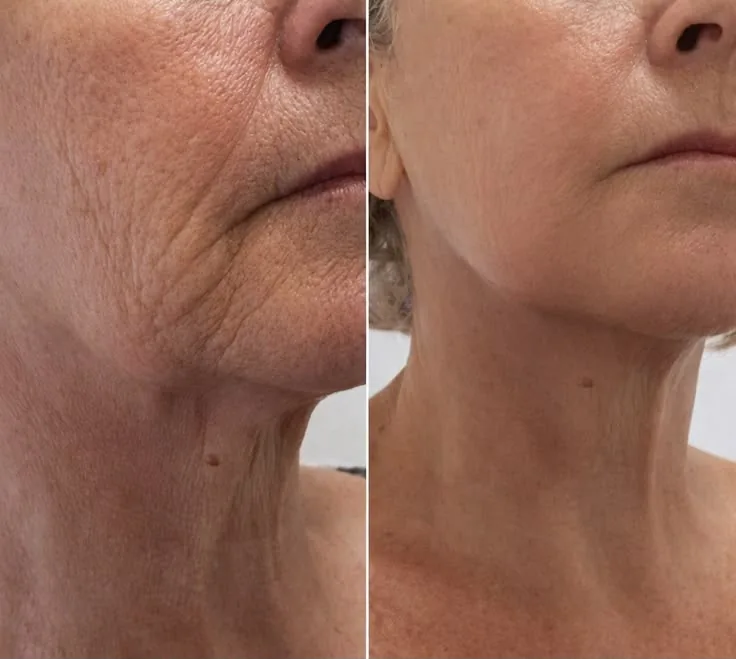
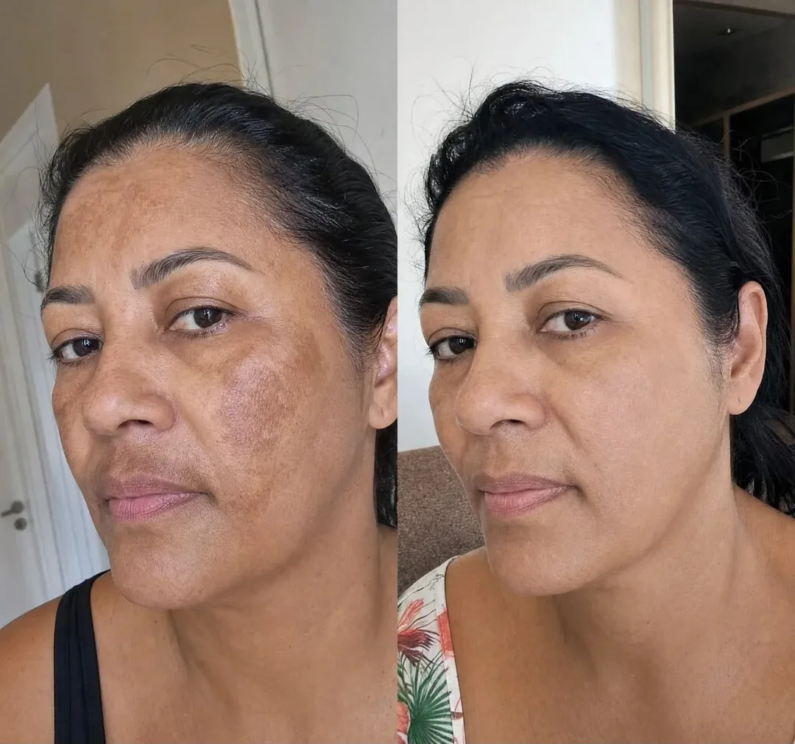
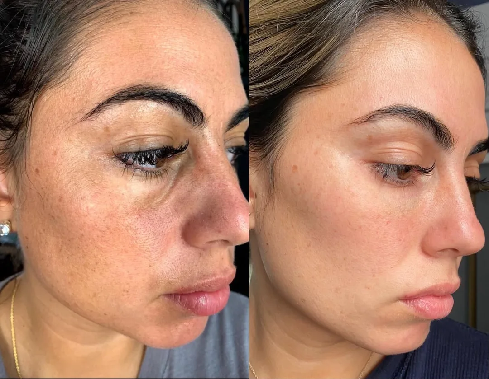
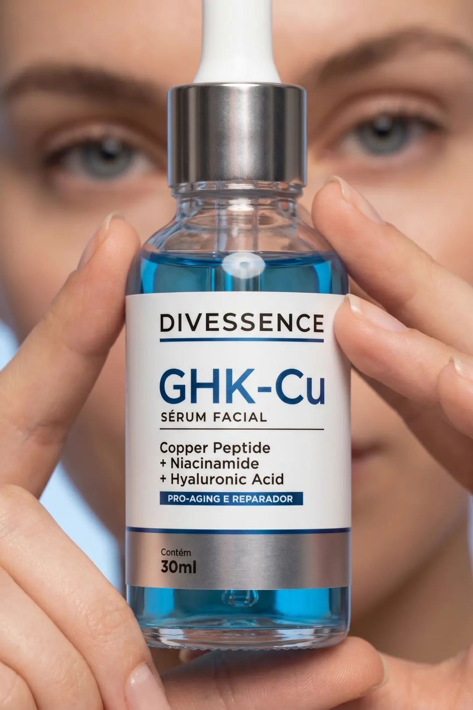

O segredo da "pele de vidro": 5 motivos pelos quais as mulheres 40+ estão trocando os cremes caros pelo sérum de GHK-Cu, e todo mundo está reparando.
1. Aquele "momento do espelho" que você andava evitando

Eu também estava muito cética, até me ver no espelho e ficar impressionada. Esse sérum não apenas hidrata; ele transforma. Depois de uma única aplicação, sua pele parece dez anos mais jovem, com aquele acabamento viçoso e brilhante pelo qual as mulheres coreanas são famosas. Você vai se surpreender com a pessoa no espelho.
2. Absorve na hora e não deixa grude
Nada de máscara escorregando nem de película pegajosa. São três gotas do sérum azul, você espalha, pressiona e vê o azul de cobre sumir na hora, absorvido de verdade. Aí é só dormir com ele agindo. De quebra, quem dorme de lado não suja a fronha e ainda aproveita o cuidado durante a noite toda.
3. As pessoas vão perguntar se você fez botox ou algum procedimento estético

Aquele elogio que a gente finge que não liga, mas adora. Quando alguém percebe sem você falar nada, e as amigas começam a perguntar o que você anda fazendo de diferente, você sabe que achou algo que faz sentido pra sua pele. Aqueles elogios que a gente secretamente espera acabam vindo.
4. Adeus opacidade e aparência de linhas finas

A minha pele saiu daquele aspecto cansado para esse aqui. Opacidade, pele sem viço, aquele ar de cansaço que faz você parecer mais abatida do que está, tudo isso vai suavizando.
O GHK-Cu é um peptídeo de cobre minúsculo, de apenas três aminoácidos, pequeno o bastante pra penetrar de verdade, diferente do colágeno, que é grande demais e fica na superfície. Junto com a niacinamida e o ácido hialurônico, ele cuida justo do que mais incomoda depois dos 40, o ressecamento, as linhas finas e a perda de viço.
5. Cuidado coreano sem rotina de 12 passos

As coreanas parecem ter 15 anos a menos, mas quem tem tempo pra aquela rotina lendária de 12 passos? Esse sérum entrega o mesmo tipo de cuidado num passo só, três gotas antes de dormir. Tem algo no skincare coreano, aquelas listas de ativos que a gente não acha em qualquer lugar. E o resultado fala por si.